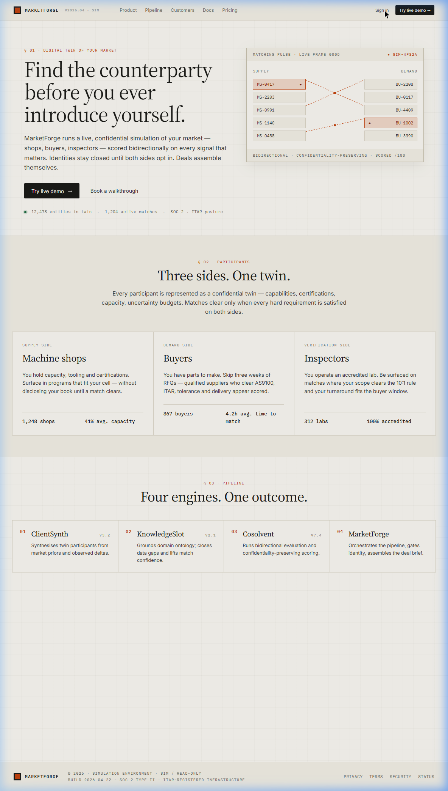
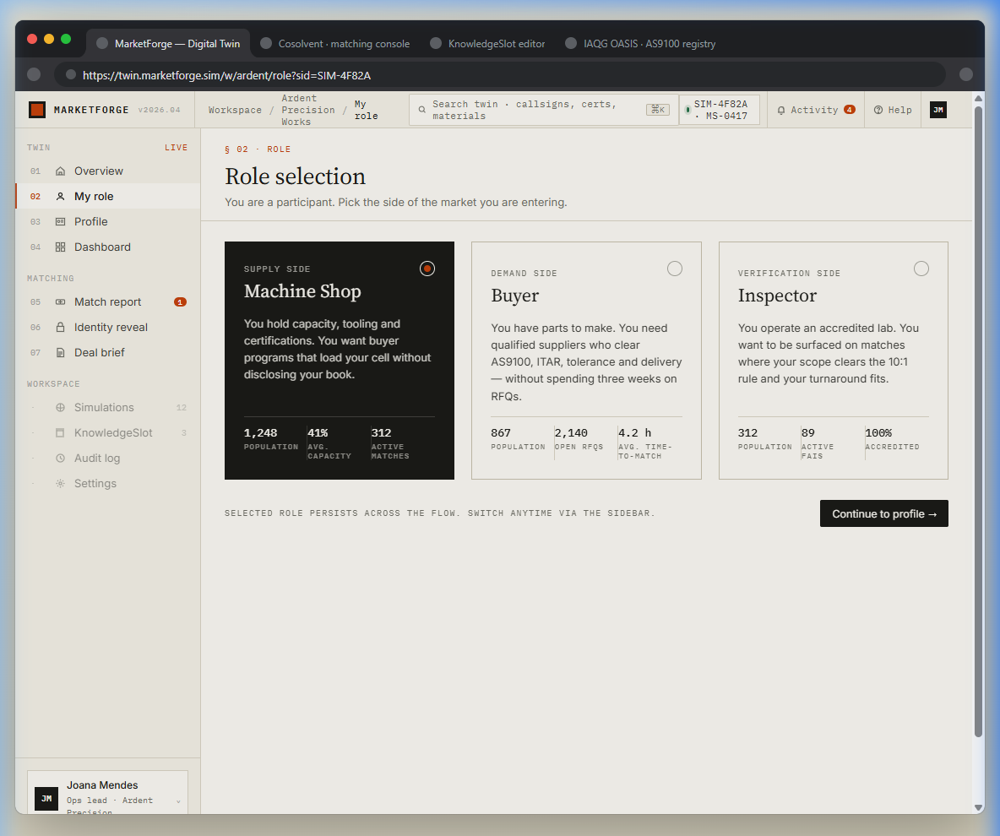
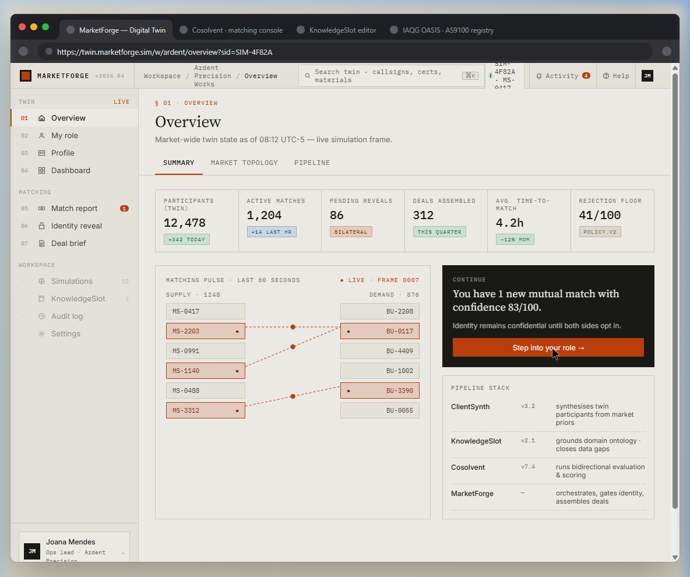
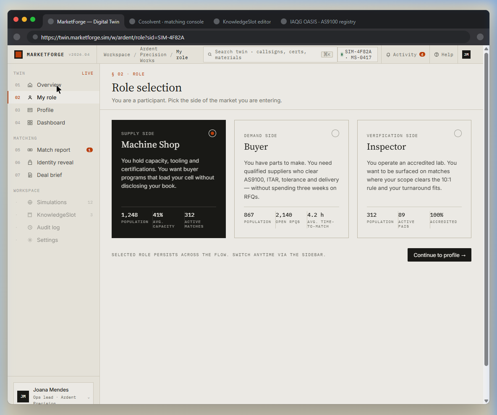
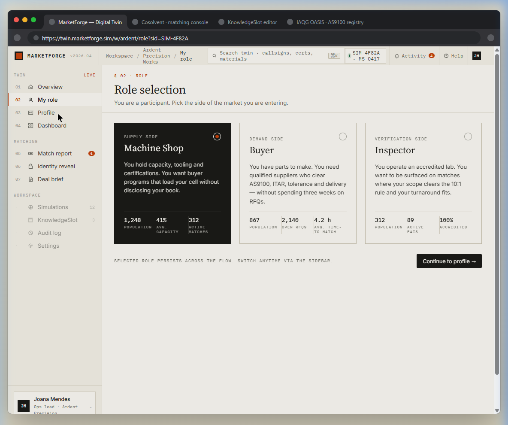
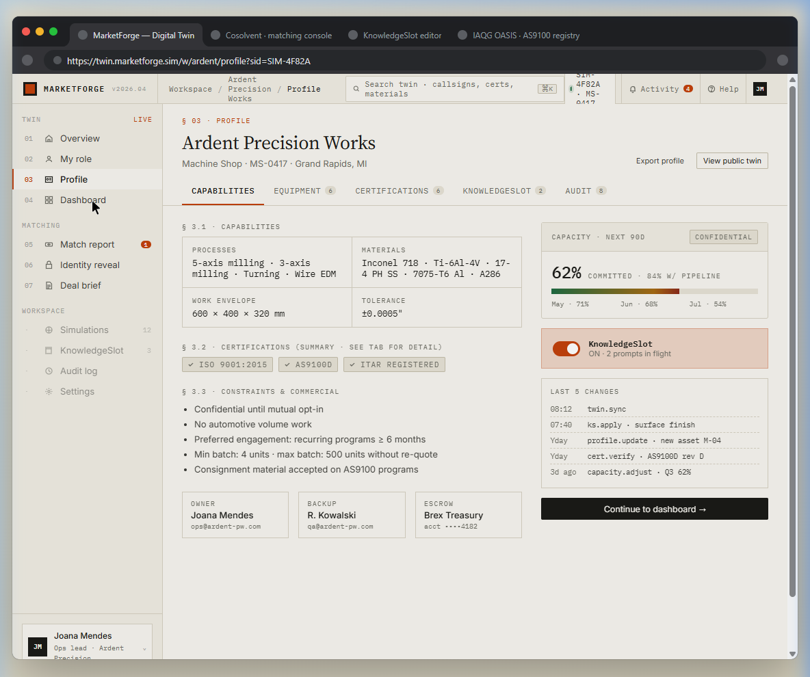
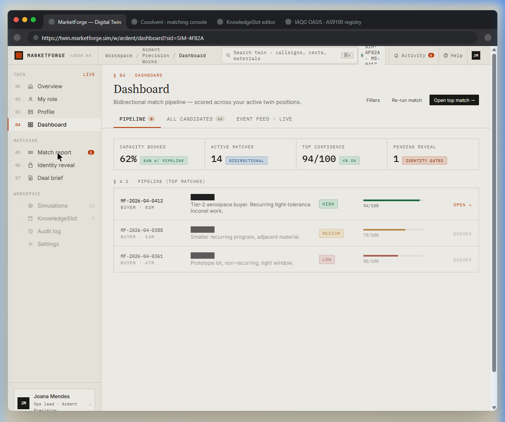
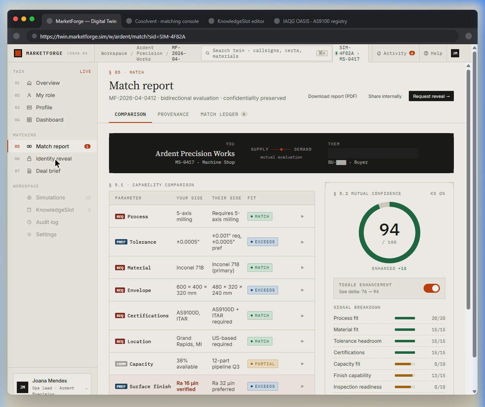
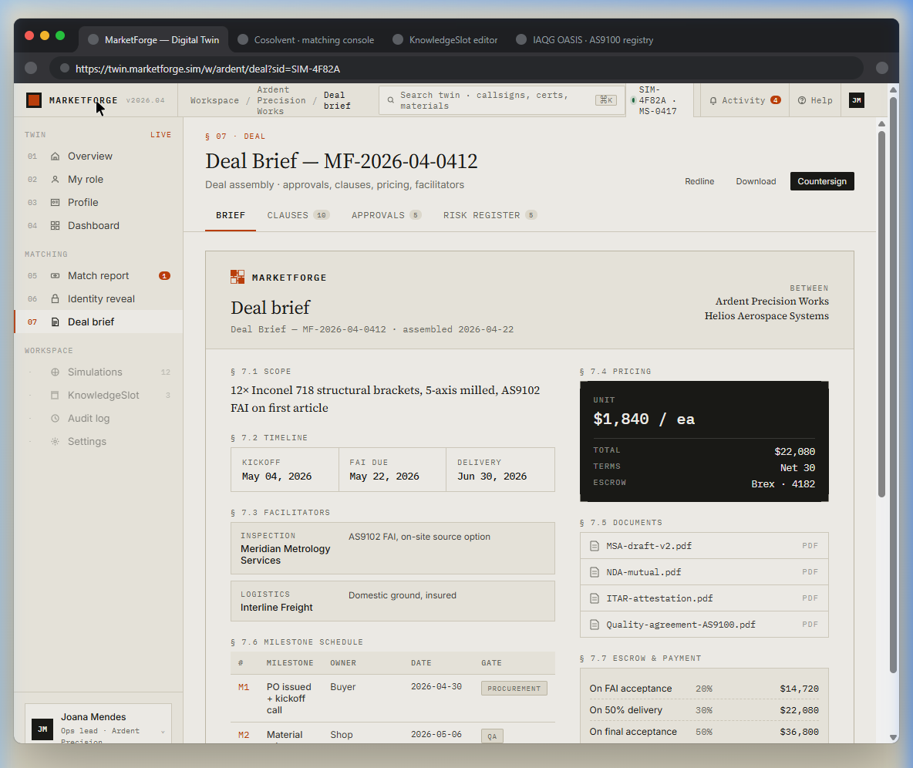

See the same market from three different angles. Enter as a machine shop, back out and re-enter as a buyer, then try the inspector — and watch how the same matching pipeline looks from each side.
The demo is built for multi-perspective exploration. Three pre-loaded personas — a machine shop, a buyer, and an inspector — let you see the same market from every angle. Start as one, walk through the pipeline, then switch personas using the panel in the bottom-left sidebar to experience how the other side sees the same matches, scores, and deal terms.
The screenshots below follow Joana Mendes (machine shop, supply side), but every screen has a counterpart view from Lena Park (buyer) and Dmitri Volkov (inspector). We recommend going through at least two personas to appreciate how bidirectional matching works.
The landing page introduces MarketForge's value proposition: "Find the counterparty before you ever introduce yourself." It previews the live matching pulse animation and summarizes the three-sided market structure (shops, buyers, inspectors) and the four-engine pipeline.

Matching Pulse
The animated diagram in the top-right shows supply callsigns (MS-xxxx) being matched to demand callsigns (BU-xxxx) in real time — identities hidden behind codes.
Three Sides
Machine Shops (supply), Buyers (demand), and Inspectors (verification) — every match requires satisfaction on all three sides.
Pipeline Stack
ClientSynth → KnowledgeSlot → Cosolvent → MarketForge. Four engines, each performing a distinct function in the matching pipeline.
After clicking "Try live demo," you choose which persona to enter the market as. Each persona sees a different slice of the same simulation — their own profile, their own matches, and their own pipeline. Try all three. The real insight comes from seeing how the same match looks from the supply side, the demand side, and the verification side.

Joana Mendes · Machine Shop
Ops lead at Ardent Precision Works, Grand Rapids MI. Supply side — she has capacity, certifications, and equipment. Start here to see how a shop gets matched to a buyer.
Lena Park · Buyer
Procurement at Helios Aerospace. Demand side — she has RFQs, tolerance specs, and delivery windows. Switch to her to see how the same match looks from the buyer's perspective.
Dmitri Volkov · Inspector
Meridian Metrology Services. Verification side — his lab gets surfaced on matches where scope and turnaround fit. The third angle on every deal.
💡 Switching Personas
You don't need to log out and start over. Use the Switch Persona panel in the bottom-left sidebar — visible on every screen — to jump between roles instantly. The market stays the same; your vantage point changes.
The Overview shows the entire simulated market — 12,478 participants, 1,204 active matches, 312 assembled deals. The matching pulse visualizes supply-demand connections in real time. The green "Continue" card signals you have a new mutual match waiting.

KPI Bar
Participants (12,478), Active Matches (1,204), Pending Reveals (86), Deals Assembled (312), Avg Time-to-Match (4.2h), Rejection Floor (41/100).
Matching Pulse
Supply callsigns (left) connect to demand callsigns (right) via dotted lines. Orange-highlighted rows indicate active matches. The pulse updates every frame.
Continue Card
"You have 1 new mutual match with confidence 83/100." Click "Step into your role" to proceed through the pipeline as your selected persona.
Sidebar Navigation
Seven numbered steps (01–07) in the left sidebar. Steps are grouped: Twin (overview, role, profile, dashboard) and Matching (match report, identity reveal, deal brief).
In a live deployment, this is where a new participant declares which side of the market they're entering. The demo pre-selects Machine Shop (supply side) for the Joana Mendes persona. Each card shows population, capacity stats, and a brief description of the role.

Machine Shop (Supply)
1,248 shops, 41% avg capacity, 312 active matches. "You hold capacity, tooling and certifications."
Buyer (Demand)
867 buyers, 2,140 open RFQs, 4.2h avg time-to-match. "You need qualified suppliers who clear AS9100, ITAR."
Inspector (Verification)
312 labs, 89 active pairs, 100% accredited. Third-party verification surfaced on matches where scope fits.
This is Ardent Precision Works' confidential twin — capabilities, equipment, certifications, constraints, and commercial terms. In a live system, this data feeds the Cosolvent matching engine. The capacity gauge (62% committed) and KnowledgeSlot status show the twin is actively maintained.

Capabilities Panel
Processes (5-axis milling, turning, wire EDM), materials (Inconel 718, Ti-6Al-4V, etc.), work envelope, and tolerance (±0.0005"). These are the signals Cosolvent matches against.
Capacity · Next 90D
62% committed, 84% with pipeline. Marked CONFIDENTIAL — this data never leaves the twin unless a mutual match triggers identity reveal.
KnowledgeSlot
ON, 2 prompts in flight. The AI-curated reference library that grounds matching in domain ontology — certifications, material specs, tolerances.
Constraints & Commercial
Min batch: 4 units. Max batch: 500. Preferred engagement: recurring ≥ 6 months. These are hard constraints — a match must satisfy all of them.
The dashboard shows your active match pipeline — scored, ranked, and identity-gated. Each row is a potential counterparty identified only by match ID. The top match (94/100, HIGH confidence) has progressed to OPEN status, meaning both sides have been notified.

Pipeline KPIs
Capacity Booked (62%), Active Matches (14, bidirectional), Top Confidence (94/100, KS ON), Pending Reveal (1, identity gated).
Match Rows
Each row shows: match ID, buyer type, description, confidence tier (HIGH/MEDIUM/LOW), score bar, and status (OPEN/QUEUED). Buyer identities remain hidden.
Bidirectional Scoring
Scores are mutual — both sides must score above the rejection floor (41/100) for a match to surface. This prevents one-sided "spam" matches.
The match report is the heart of MarketForge. It shows a parameter-by-parameter comparison between your capabilities and the buyer's requirements — process, tolerance, material, envelope, certifications, location, capacity, and surface finish. Each parameter is scored independently with a fit verdict (MATCH, EXCEEDS, PARTIAL).

Capability Comparison
Your Side vs. Their Side for each parameter. Green MATCH/EXCEEDS badges indicate compatibility. Orange PARTIAL flags gaps worth reviewing.
Mutual Confidence · 94/100
The composite score with KnowledgeSlot enhancement (+18). Toggle enhancement off to see the base Cosolvent score (76). The donut chart makes the score instantly readable.
Signal Breakdown
Process fit (20/20), Material fit (15/15), Tolerance headroom (15/15), Certifications (15/15), Capacity fit (8/10), Finish capability (13/15), Inspection readiness (8/10).
Confidentiality Preserved
Notice: the counterparty is identified only as "BU-████ · Buyer." No company name, no contact info. Identity stays locked until both sides opt in.
This is MarketForge's most distinctive feature. Neither party's identity is revealed until both opt in. The screen shows two dark cards — your callsign (MS-0417) and theirs (BU-████) — separated by a padlock. Three explainer cards below describe the escrow, ledger, and withdrawal mechanics.

Identity Escrow
Names, logos, and locations are held server-side, encrypted at rest, and released only on mutual consent.
Reveal Ledger
Every opt-in is signed and timestamped. Either party can revoke before deal assembly begins.
Withdrawal
Either side may un-reveal within 24h if no deal has been countersigned. All derived artifacts are purged.
Once both parties reveal, MarketForge assembles a complete deal brief — scope, pricing, timeline, facilitators (inspection lab, logistics), milestone schedule, escrow terms, and supporting documents. This is a structured, auditable commercial document — not a chat thread.

Scope
12× Inconel 718 structural brackets, 5-axis milled, AS9102 FAI on first article. Precisely defined — no ambiguity.
Pricing & Escrow
$1,840/ea, $22,080 total, Net 30 terms. Escrow held by Brex (acct ····4182). Payment milestones: 20% on FAI acceptance, 30% on 50% delivery, 50% on final.
Facilitators
Meridian Metrology Services (AS9102 FAI, on-site source option) and Interline Freight (domestic ground, insured). Third parties surfaced by the matching engine.
Documents
MSA-draft-v2.pdf, NDA-mutual.pdf, ITAR-attestation.pdf, Quality-agreement-AS9100.pdf — all attached and downloadable.
Launch the demo and experience the full flow — pick a persona, explore the market, and follow a match from discovery to deal assembly.
Learn how the four engines — ClientSynth, KnowledgeSlot, Cosolvent, and MarketForge — work together to enable confidential matching.
A plain-language introduction to thin markets, why they fail, and what AI changes about the equation.